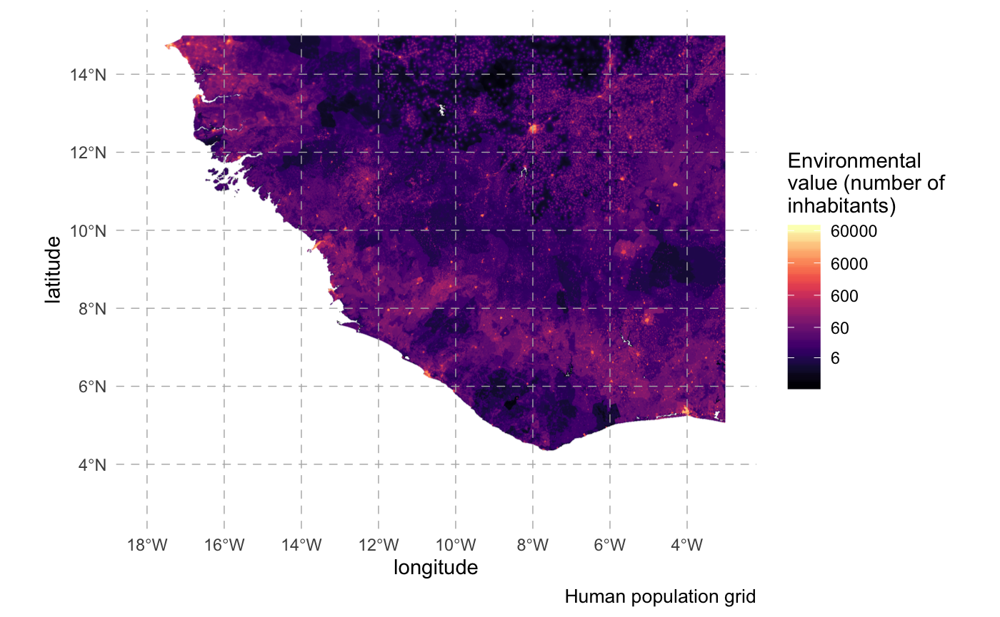
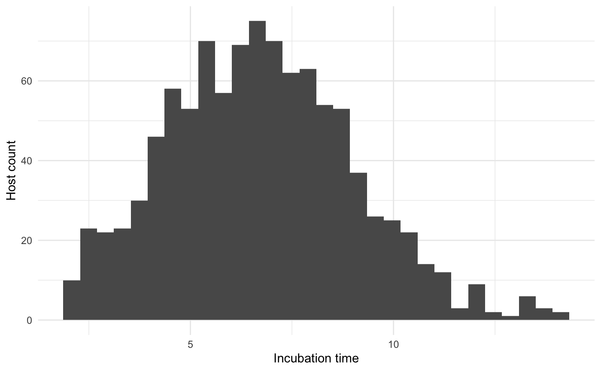
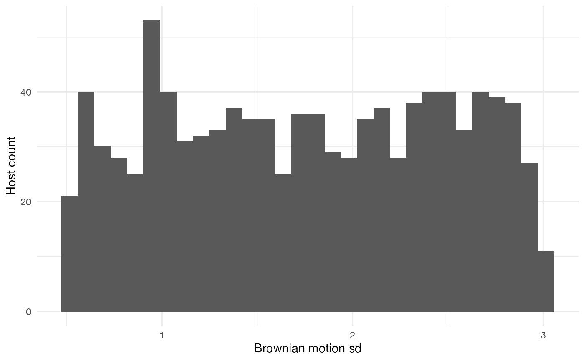
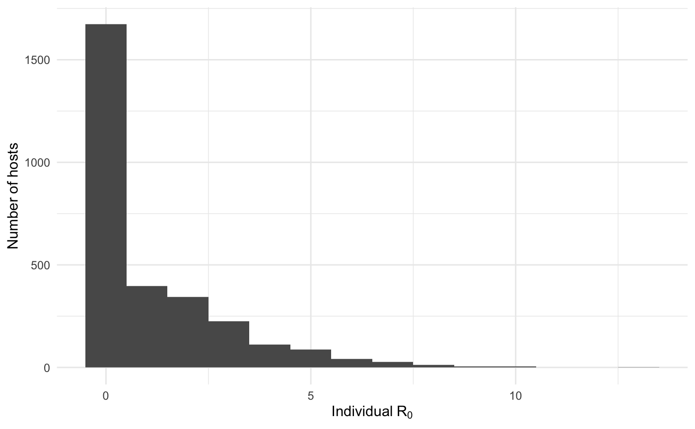
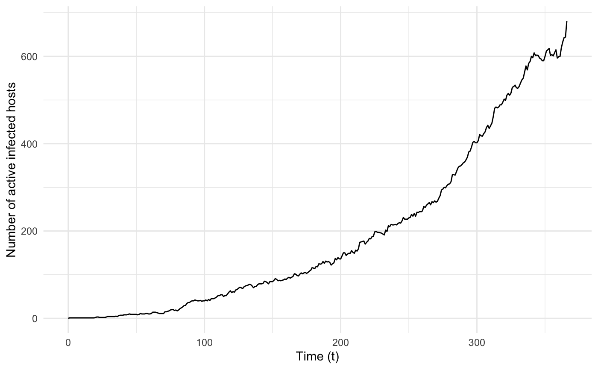
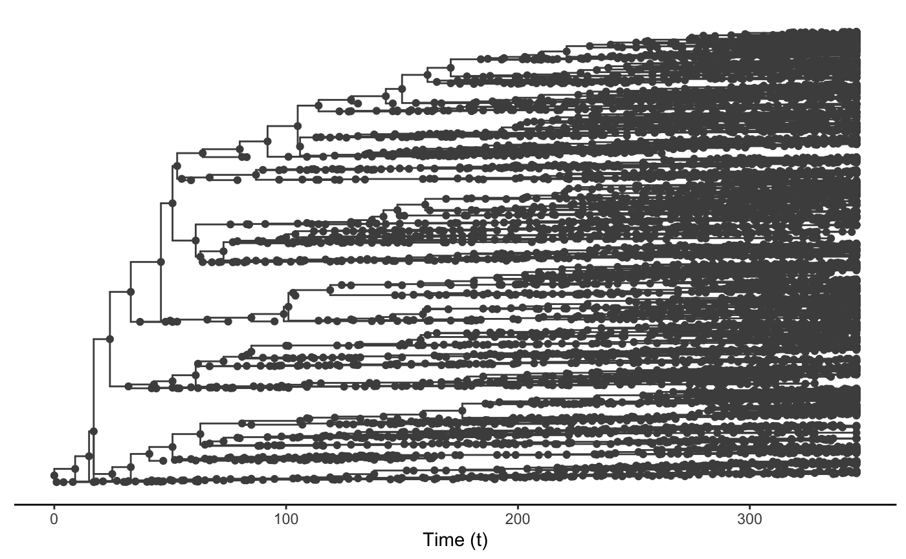
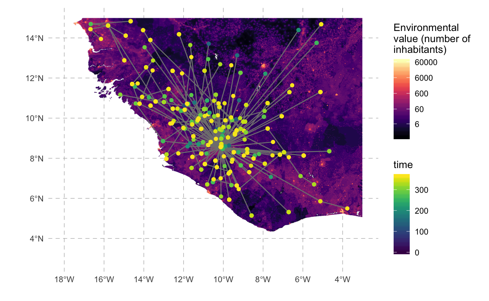
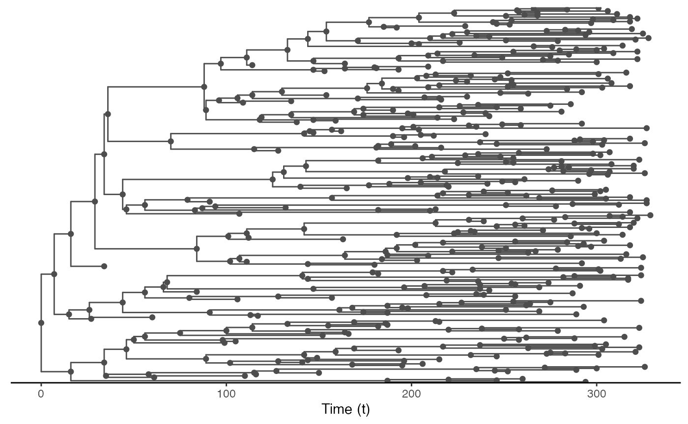
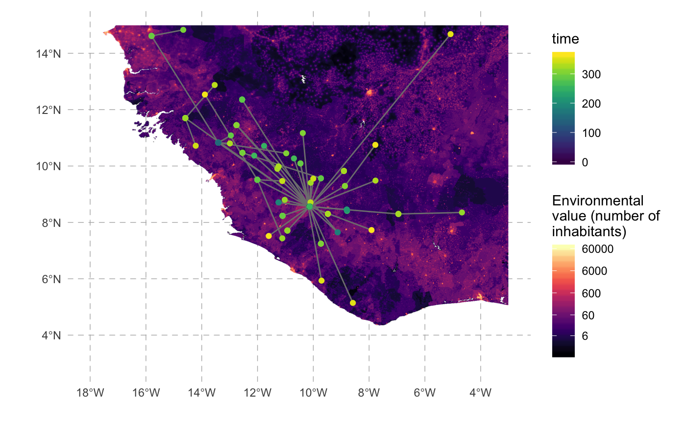

Spread of an Ebola-like virus in continuous space
Sebastian Lequime & Simon Dellicour
2019-11-14
Source:vignettes/examples/ebola.Rmd
ebola.RmdIntroduction
In this example, we aim to simulate an Ebola-like epidemic in Western Africa. We will use the distribution of the population in this region as the “environmental factor” to be included in our simulation (origin: WorldPop).
A compressed version of the raster can be found on the GitHub repository. The following chunk of code can be used to download it in R:
# Create tmp file and download WorldPop Africa raster data
tmp_dir = tempdir()
tmp_file = tempfile(tmpdir = tmp_dir, fileext = ".zip")
raster_url <- "https://github.com/slequime/nosoi/raw/master/docs/articles/examples/Africa_pop_2015.tif.zip"
download.file(raster_url, tmp_file)
data_file <- unzip(tmp_file, exdir = tmp_dir, overwrite = TRUE)[1]
unlink(c(tmp_dir, tmp_file))We can then plot the map used in this example (here represented on a log scale to show efficiently differences in distribution):

Ebola will here be considered a single-host pathogen, and some of the pathogen-related parameters can be found in the literature. The others will be empirically fixed to realistic values. As estimated for the 2013 epidemic, the first infected host will start at Gueckedou in Guinea.
Host parameters
pExit
The probability of exiting (i.e. in our case recovering or dying from the infection) for each host will depend on (1) time since infection and (2) a host parameter called t_incub for “incubation time” that will be sampled, for each host, based on a published article ( Casillas et al. 2003 Biol Res Nurs ):
t_incub_fct <- function(x){
t_incub = c()
while (length(t_incub) == 0)
{
t_incub = rnorm(x, mean=6.5, sd=2.5)
t_incub = t_incub[(t_incub>=2)&(t_incub<=21)]
if (length(t_incub) > 0)
{
if (length(t_incub) < x)
{
t_incub = c(t_incub, sample(t_incub,x-length(t_incub)))
}
}
}
return(t_incub)
}which gives the following distribution for 1,000 hosts:

If “time since infection” (hereafter t) is below the incubation time (t_incub), then the probability to exit is null. If t is greater that t_incub but below a recovery time (t_recovery fixed at 20 days after symptom onset), then the daily probability to exit (by dying) is 2.5%. If t is greater than t_recovery, then the probability to exit (by being cured) is 1.
p_Exit_fct <- function(t, t_incub){ # return(0.1)} # should return a value between 0 and 1 (probability)
t_recovery = 20 # days before recovery
if (t <= t_incub) { p = 0 }
if ((t > t_incub)&(t < (t_incub+t_recovery))) { p = 0.025 } # 50% chance to die before recovery
if (t > (t_incub+t_recovery)) { p = 1 }
return(p)
}Movement
The daily probability to move pMove for a host is empirically set to 0.01 (1% chance for a host to move each day) before onset of symptoms. We will assume here that every infection will be symptomatic (although this is a crude assumption). Once symptoms are apparent, pMove will be set at 0.
p_Move_fct <- function(t, t_incub){
if (t <= t_incub) { p = 0.01 }
if (t > t_incub) { p = 0}
return(p)}The distance traveled is determined by the standard deviation of the Brownian motion (sdMove) used as the movement kernel in nosoi. Keep in mind that this standard deviation is in your coordinate space, so the actual distance traveled by the host may actually vary according to your space. For each host that moves, a standard deviation will be sampled using this function:
This function will lead to the following distribution for 1,000 hosts:

nContact
The daily number of infection contacts nContact per infected host will be fixed at 5, but will depend on the number of hosts (i.e. population) around. It will thus depend on the “environmental value” current.env.value provided by the raster. To avoid reaching unrealistic values (i.e. much more infected hosts than hosts leaving there), a cap provided by host.count (number of hosts currently in the raster cell) will be used:
pTrans
Once contact has been made, the probability of transmission itself will depend of the incubation time t_incub (see above). The probability to transmit, if t_incub is reached, will be 0.025 (loosely based on Skrip et al. 2017 Philos Trans R Soc Lond B Biol Sci ):
Running nosoi
Now that every parameter and function has been chosen and set up, we can run the simulation. Most of the replicates will fail to yield a “successful” epidemic (i.e. with a lot of infected individuals) due to the high stochasticity of the model. However some will work; the following random number seed assures that a “successful” simulation will occur.
## Loading required package: data.table##
## Attaching package: 'data.table'## The following object is masked from 'package:raster':
##
## shift#Raster (to uncomment in your case):
# e_WestAfrica = extent(-18, -3, 3, 15) # WorldPop Africa raster:
# population = crop(raster("~/path/to/the/raster.tif"), e_WestAfrica)
#Starting parameter:
start.pos <- c(-10.132, 8.561) # Guéckédou in Guinea
#pExit:
p_Exit_fct <- function(t, t_incub){
t_recovery = 20 # days before recovery
if (t <= t_incub) { p = 0 }
if ((t > t_incub)&(t < (t_incub+t_recovery))) { p = 0.025 } # 50% chance to dye before recovery
if (t > (t_incub+t_recovery)) { p = 1 }
return(p)
}
#pMove:
p_Move_fct <- function(t, t_incub){
if (t <= t_incub) { p = 0.01 }
if (t > t_incub) { p = 0}
return(p)}
#sdMove:
sdMove_fct <- function(t){runif(1,min=0.5,max=3)}
#nContact:
n_contact <- function(t, current.env.value, host.count){
if(host.count < current.env.value){return(3)}
if(host.count >= current.env.value){return(0)}
}
#pTrans:
t_incub_fct <- function(x){
t_incub <- c()
while (length(t_incub) == 0)
{
t_incub = rnorm(x, mean=6.5, sd=2.5)
t_incub = t_incub[(t_incub>=2)&(t_incub<=21)]
if (length(t_incub) > 0)
{
if (length(t_incub) < x)
{
print(t_incub)
t_incub <- c(t_incub, sample(t_incub,x-length(t_incub)))
}
}
}
return(t_incub)
}
proba = function(t, t_incub) {
if (t <= t_incub) { p = 0 }
if (t > t_incub) { p = 0.025 }
return(p)
}
#Starting the simulation ------------------------------------
set.seed(505060)
test.nosoiA <- nosoiSim(
type = "single", popStructure = "continuous",
length = 365,
max.infected = 10000,
init.individuals = 1,
init.structure = start.pos,
structure.raster = population,
#pExit:
diff.pExit = FALSE,
timeDep.pExit = FALSE,
pExit = p_Exit_fct,
param.pExit = list(t_incub = t_incub_fct),
#pMove:
diff.pMove = FALSE,
timeDep.pMove = FALSE,
pMove = p_Move_fct,
param.pMove = list(t_incub = t_incub_fct),
#sdMove:
diff.sdMove = FALSE,
timeDep.sdMove = FALSE,
sdMove = sdMove_fct,
param.sdMove = NA,
attracted.by.raster = FALSE,
#nContact:
diff.nContact = TRUE,
timeDep.nContact = FALSE,
hostCount.nContact = TRUE,
nContact = n_contact,
param.nContact = NA,
#pTrans:
diff.pTrans = FALSE,
timeDep.pTrans = FALSE,
pTrans = proba,
param.pTrans = list(t_incub = t_incub_fct),
#Closing parameters:
prefix.host = "H",
print.progress = FALSE
)## Starting the simulation
## Initializing ...## running ...## done.
## The simulation has run for 365 units of time and a total of 3603 hosts have been infected.The simulation has run for 365 days and has infected 3603 individual hosts.
Analyzing the results
Visualization
Our first step will be to visualize this simulated epidemic on the map. We can use the following code to produce an animation (in time) of the epidemic:
test.data <- getTableState(test.nosoiA)
library(ggspatial)
library(gganimate)
#The following script gives the position of every host at every time point:
results <- data.frame()
for (i in 1:max(test.data$time.from)) {
temp = subset(test.data, (time.from <= i)&c((time.to > i)|is.na(time.to)))[,c("hosts.ID","state.x","state.y","current.env.value")]
temp$time = i
results=data.table::rbindlist(c(list(temp),list(results)))
}
#This is for the animated plot:
animated.plot <- ggplot() +
layer_spatial(population) +
scale_fill_viridis(trans = "log1p",option="A",limits=c(0,NA),na.value="NA", name="Environmental\nvalue (number of\ninhabitants)",
position="bottom",breaks=c(6,60,600,6000,60000),labels=c(6,60,600,6000,60000)) +
labs(x="", y="") +
geom_point(data=results, aes(state.x,state.y) ,show.legend=F, color="firebrick3", alpha=0.5) + transition_states(time) +
theme(panel.background = element_blank(),
panel.ontop = FALSE,
panel.grid.major = element_line(size=0.25, linetype="dashed", colour="grey70"),
axis.ticks=element_blank(),
plot.caption=element_text(size=10)) +
labs(title = "Time: {closest_state}")
animate(animated.plot, nframes=test.nosoiA$total.time*2+10,duration=40,end_pause=10)
In this animation, green dots represent the infected hosts, each dot being an individual host (beware, dots can overlap). The transparency for each dot allows to visualize superposition of dots, in a certain measure, and explains why some dots appear darker (no overlap) than others (overlap). Time is in days.
Beware, the gif file displayed here has been produced with a lower resolution raster to avoid a big file size. If you try to prepare this gif without reducing the raster resolution, it might take several hours (or days!) to finish.
Epidemiological analysis
As interesting as the visualization might be, we can also explore the epidemic parameters, for example the “real” \(R_0\), defined as the average number of cases one case generates, often estimated in epidemiological studies. To this end, we can use the following code:
The mean value for \(R_0\) is 1.12, which is coherent with epidemiological estimates for Ebola virus. Its distribution is also coherent with most hosts not transmitting:

The two following figures also give the epidemiological dynamics of the simulation:
dynamic.sim <- getDynamic(test.nosoiA)
cumulative.sim <- getCumulative(test.nosoiA)
ggplot(data=dynamic.sim, aes(x=t, y=Count)) + geom_line() + theme_minimal() +
labs(x="Time (t)",y="Number of active infected hosts")
ggplot(data=cumulative.sim, aes(x=t, y=Count)) + geom_line() + theme_minimal() +
labs(x="Time (t)",y="Cumulative count of infected hosts")
Transmission chain
Since nosoi relies on the simulation of a transmission chain, we can also visualize the transmission in geographic space. To do this, we will first generate the transmission tree as a phylogenetic tree-like object by using the getTransmissionTree function implemented in nosoi:
This function gives you a treedata object that can be visualized as a phylogenetic tree with the package :
library(ggtree)
ggtree(test.nosoiA.tree, color = "gray30") + geom_nodepoint(color = "gray30") + geom_tippoint(color = "gray30") + # geom_tiplab(aes(label=host)) +
theme_tree2() + xlab("Time (t)") + theme(legend.position = c(0,0.8),
legend.title = element_blank(),
legend.key = element_blank())
Of course this does not give us much information about the spatial distribution of this transmission tree. We can use data contained into this treedata object to plot our transmission tree on our environmental raster:
# Extracting node data from the tree (including long/lat coordinates):
tree.node <- tidytree::as_tibble(test.nosoiA.tree)
# Joining table to get coordinates of starting and ending nodes:
library(dplyr)
tree.links <- left_join(tree.node, tree.node, by = c("parent" = "node"), suffix = c(".to", ".from"))
#Plotting everything:
ggplot() +
layer_spatial(population) + labs(x="", y="") +
scale_fill_viridis(trans = "log1p",option="A",limits=c(0,NA),na.value="NA",
name="Environmental\nvalue (number of\ninhabitants)", position="bottom",
breaks=c(6,60,600,6000,60000),labels=c(6,60,600,6000,60000)) +
scale_color_viridis(option="D",limits=c(0,NA),na.value="white", name="time") +
theme(panel.background = element_blank(), panel.ontop = FALSE,
panel.grid.major = element_line(size=0.25, linetype="dashed", colour ="grey70"),
axis.ticks=element_blank(), plot.caption=element_text(size=10)) +
geom_segment(data=tree.links, aes(x = state.x.from, y = state.y.from, xend = state.x.to, yend = state.y.to),
color="gray50") +
geom_point(data=tree.node, aes(x=state.x, y=state.y,color=time))
The full transmission chain is a bit messy, because of the number of infected individuals. We can also subsample it randomly. We will here select 250 individuals sampled at the time of their exit (either death or recovery):
#Extracts data from the nosoiSim object:
test.table.hosts <- getTableHosts(test.nosoiA)
test.nosoiA.tree <- getTransmissionTree(test.nosoiA)
#Sampling the names of individuals to be sampled:
set.seed(5905950)
sampled.hosts <- sample(subset(test.table.hosts, active == 0)$hosts.ID, 250)
#Subsampling:
test.nosoiA.tree.sampled.exiting <- sampleTransmissionTreeFromExiting(test.nosoiA.tree, sampled.hosts)This new tree can be plotted as before:
library(ggtree)
ggtree(test.nosoiA.tree.sampled.exiting, color = "gray30") + geom_nodepoint(color = "gray30") + geom_tippoint(color = "gray30") + # geom_tiplab(aes(label=host)) +
theme_tree2() + xlab("Time (t)") + theme(legend.position = c(0,0.8),
legend.title = element_blank(),
legend.key = element_blank())
We can also draw it in geographic space:
# Extracting node data from the tree (including long/lat coordinates):
tree.node <- tidytree::as_tibble(test.nosoiA.tree.sampled.exiting)
# Joining table to get coordinates of starting and ending nodes:
library(dplyr)
tree.links <- left_join(tree.node, tree.node, by = c("parent" = "node"), suffix = c(".to", ".from"))
#plotting everything
ggplot() +
layer_spatial(population) + labs(x="", y="") +
scale_fill_viridis(trans = "log1p",option="A",limits=c(0,NA),na.value="NA",
name="Environmental\nvalue (number of\ninhabitants)", position="bottom",
breaks=c(6,60,600,6000,60000),labels=c(6,60,600,6000,60000)) +
scale_color_viridis(option="D",limits=c(0,NA),na.value="white", name="time") +
theme(panel.background = element_blank(), panel.ontop = FALSE,
panel.grid.major = element_line(size=0.25, linetype="dashed", colour ="grey70"),
axis.ticks=element_blank(), plot.caption=element_text(size=10)) +
geom_segment(data=tree.links, aes(x = state.x.from, y = state.y.from, xend = state.x.to, yend = state.y.to),
color="gray50") +
geom_point(data=tree.node, aes(x=state.x, y=state.y,color=time))
Other use
External software can be used to perform a more detailed exploration of the dynamics of this epidemic and transmission chain. The write.beast function of the treeio package allows for an easy export of the transmission chain as a phylogenetic-like tree, in a similar format as BEAST trees.